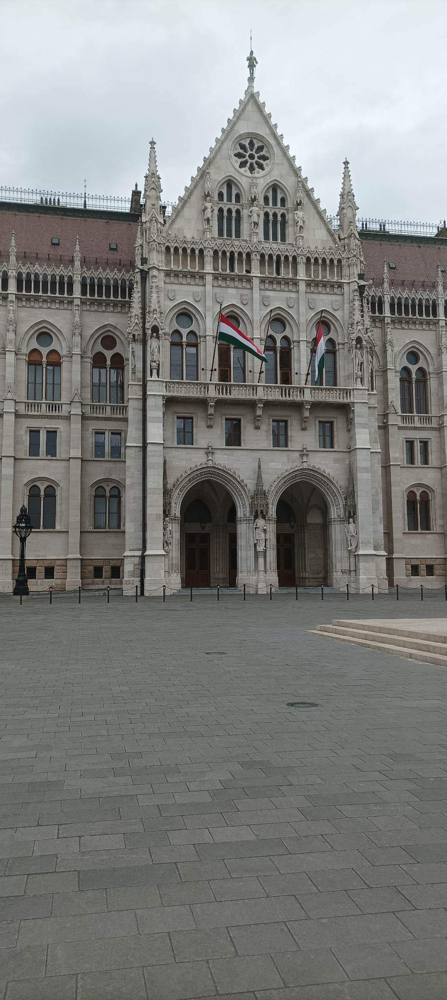

The Hungarian Parliament Building is a stunning example of neo-gothic architecture and is one of the most iconic buildings in Budapest. It was built in the early 20th century and houses the Hungarian National Assembly. You can take a guided tour of the building to see its beautiful interior.
The Hungarian Parliament Building is the largest building in Hungary and the third-largest parliament building in the world.
The building is located on the bank of the Danube River and is a prominent landmark of Budapest
Construction of the building took 17 years and was completed in 1904.
The building is 268 meters long, 123 meters wide, and 96 meters tall, with 691 rooms in total.
The building was designed by Hungarian architect Imre Steindl, who drew inspiration from various architectural styles, including Gothic and Renaissance.
The interior of the building features stunning works of art, including frescoes, stained glass windows, and sculptures.
The Hungarian Crown Jewels are kept in the building and can be viewed by the public in the central dome.
The Hungarian Parliament has two chambers: the National Assembly and the Upper House. The National Assembly has 199 members, and the Upper House has 96 members.
The Hungarian Parliament has a unique tradition called the "Holy Crown Ceremony," which takes place every five years. During the ceremony, the Hungarian Crown Jewels are brought out of the building and paraded through the streets of Budapest.
The building is open to the public, and guided tours are available in multiple languages. Visitors can see the grand staircase, the dome hall, and the National Assembly chamber, among other areas.
br
Budapest was united from three cities in 1873, namely Buda, Óbuda, and Pest. Seven years later the Diet resolved to establish a new, representative parliament building, expressing the sovereignty of the nation. The building was planned to face the Danube River. An international competition was held, and Imre Steindl emerged as the victor; the plans of two other competitors were later also realized in the form of the Ethnographic Museum and the Hungarian Ministry of Agriculture, both facing the Parliament Building. Construction from the winning plan was started in 1885, and the building was inaugurated on the presumed 1,000th anniversary of the country in 1896. The keys to the building being handed over in 1902, however, It was not fully completed until 1904. The architect of the building first went blind and then later, died before its completion. About 100,000 people were involved in its construction, during which 40 million bricks, half a million precious stones and 40 kg (88 lb) of gold were used. Since World War II the legislature became unicameral, and today the government uses only a small portion of the building. During the People's Republic of Hungary a red star perched on the top of the dome, but it was removed in 1990 after the fall of communism. Mátyás Szűrös declared the Hungarian Republic from the balcony facing Kossuth Lajos Square on 23 October 1989.
